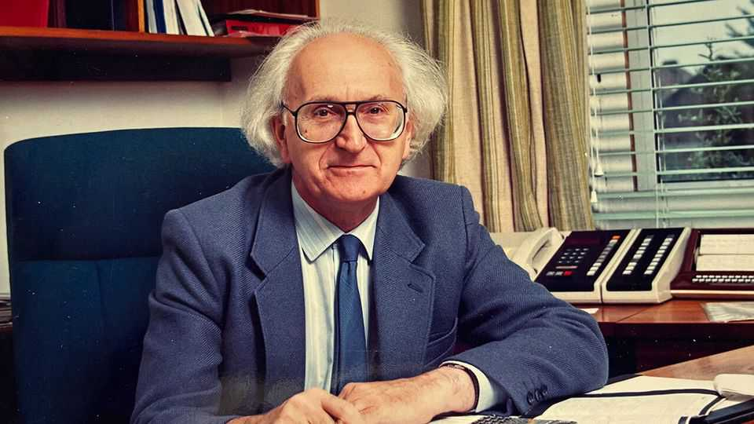

Cyril Hilsum invented the flat-screen displays that hold us in thrall
The physicist and materials scientist died on September 23rd, aged 101

Oct 8th 2026
Whenever in later life a fresh idea struck him, Cyril Hilsum would leave the dinner table and wander to his lab. He didn’t have far to go. Part of it was in the garage, part in the scullery, of his house in Pinner, north-west of London. The rest was in the kitchen. One counter was his electronics bench, with an oscilloscope, a pair of waveform generators, a spectrum analyser and a tray of voltage dividers looped to each other and to a soldering station with a maze of cables. On the facing counter stood a three-roll mill for working conductive powders, a precision balance, a small vacuum chamber and many labelled jars of carbon black and nickel powder. Everything had its place here apart from kitchen stuff; but he dined, and lunched too, mostly on red wine, ready meals and chocolate. Fruit and veg he disdained. He lived very healthily on a diet of curiosity, hard work and endless ideas.
In all he had over 70 patents to his name. The last, filed when he was 97, was for ink with sensors that conducted electricity. His lasting fame, though, came from liquid-crystal displays. In the 1970s he realised that these could replace the bulky, power-hungry TVs of old, with their bulging cathode-ray tubes and curved screens, with slim flat-screen models that could be hung on a wall. He and his collaborators started small, with digital watches in 1974; but in no time flat screens were everywhere, in computer monitors, cockpit displays, departure boards and, especially, mobile phones. Sharper images took longer; but in the modern screen-bound age, he changed the world’s way of seeing.
It had been difficult work. Liquid crystals certainly behaved like liquids, because they flowed, but their molecules could keep a structure for a very brief time. It was up to him to stabilise them and induce them to work at room temperature. In two years he and two colleagues, George Gray and Peter Raynes, produced and patented a whole new controllable family of them.
His second-proudest achievement was to build in 1962 Britain’s first semiconductor laser, which involved getting gallium arsenide to behave. This was extremely hard. To make it he had to mix gallium with arsenic in a silica tube, heat it furiously, stick it in a shed and wait til morning. By then it would have burst the tube asunder, and he would have to pick out the pieces. But now he had a compound whose electrons were finely tuned to convert electrical energy efficiently into light, making a laser so compact that it could be used with ordinary batteries in everyday devices: CD players, burglar alarms, speed-detection devices, LEDs, printers and scanners.
The mini-radars proved especially useful. They could be fitted under trains to start them braking, even at 200mph, and one version, called Claribel, used the speed and trajectory of a bullet to pinpoint the position of hidden snipers in Northern Ireland. Once deployed, the sniping stopped. As for him he was stopped too, by a policeman with a speed-gun, as he roared down a motorway in his usual mode; but got away with it by saying he was its inventor, and that one was wrongly calibrated. He didn’t lose many arguments, even with the law. But then, with his nimbus of hair and his high domed forehead, he did look every inch an inventor.
At that time he was working at the Royal Signals and Radar Establishment at Malvern, where he stayed from 1964 to 1983. Strictly speaking he was a civil servant, although he never felt like one; he was a scientist and an engineer. An engineer first perhaps, who at three had taken his toys apart to see how they worked and, sometimes, succeeded in reassembling them. His bent was practical and, often, commercial. That came from being the son of struggling street traders in the East End. At weekends he worked on the stalls (chamois leather on Portobello Road, flat caps on Petticoat Lane), and in the evenings he often watched his father concealing, with gold paint, the printed price on chocolate bars, in order to sell them for more. A large part of his impetus to replace cathode-ray tubes was the fact that the British government was paying huge royalties to the Radio Corporation of America for using them. When everyone went roaring after liquid crystals, the government speedily earned £100m.
He was still frustrated, though, by officialdom’s general failure to exploit the good ideas British scientists had, and at 57 he left Malvern to lead the GEC Hirst Research Centre. Amazingly, it was the first time he had ever decided what to do in life. Previously, he had simply moved from project to project as ministers or higher-ups dictated. He went willingly, because every promotion was a step further from the East End, and because his quick mind (he beat Alan Turing at chess, once) always won him a measure of independence. At school he and his friend Jack had been allowed to sit in the back row, working at their own fast pace. At both Malvern and at GEC, and before that, he had a lab of his own.
He believed strongly, however, that scientists should be accountable for what they were doing. His consistent question was, Why? Why had his mother insisted on washing him every day, when he hardly got dirty? And why did theoretical physicists sit every day at their desks or in their labs, enjoying taxpayer funding, without trying to apply what they had learned? If they had seen an effect, it was up to them to find a use for it, as he infallibly had.
In 2006 the British Liquid Crystal Society introduced a Cyril Hilsum medal. He was pleased, but almost embarassed. He cared more about the scholarship he had set up in memory of his wife Betty, his rock, and the prize he started in memory of his daughter Karen, who died at 42. She had been a promising engineer. All through his career he had hired or promoted women equally with men. In fact, as scientists he preferred them. Men cared about learning more; women cared about using science for good. That was much more crucial, for him, than any wonders they might do in the kitchen. And anyway, they could hardly get into his. ■